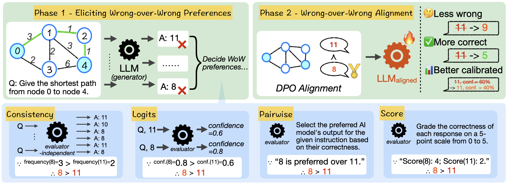
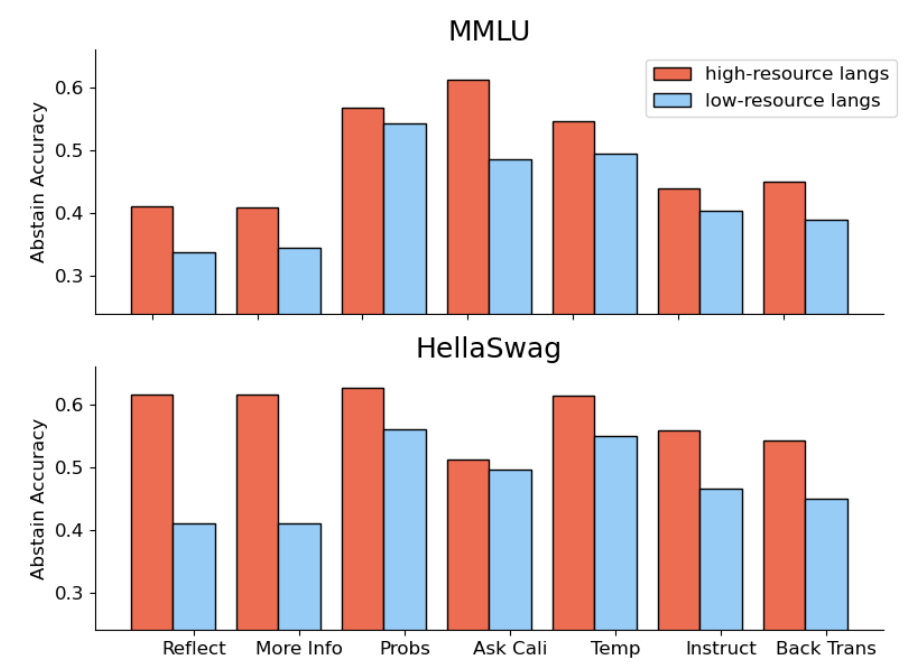
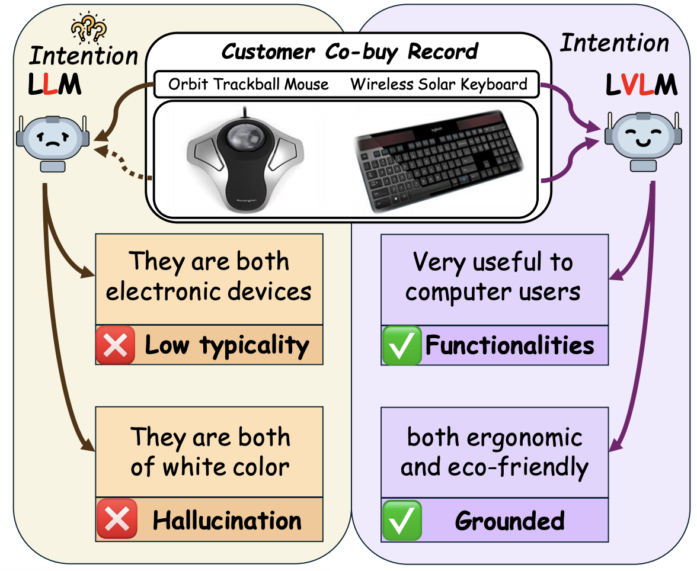
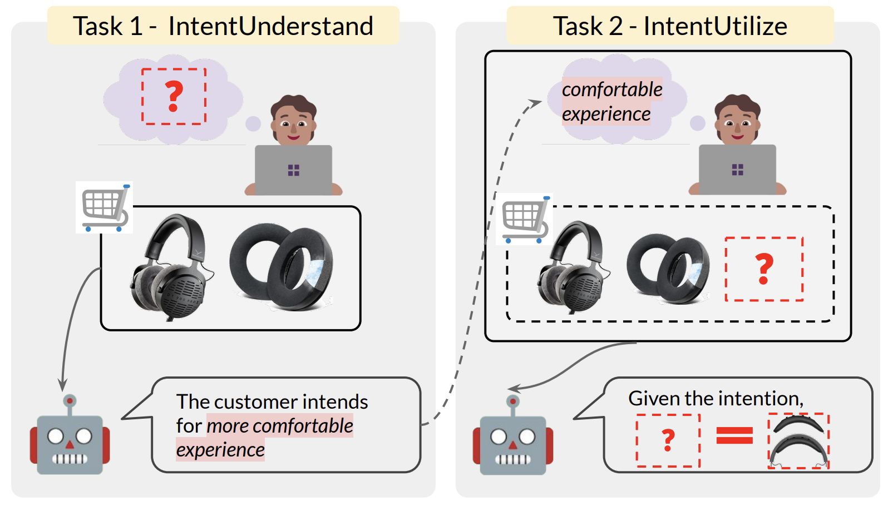
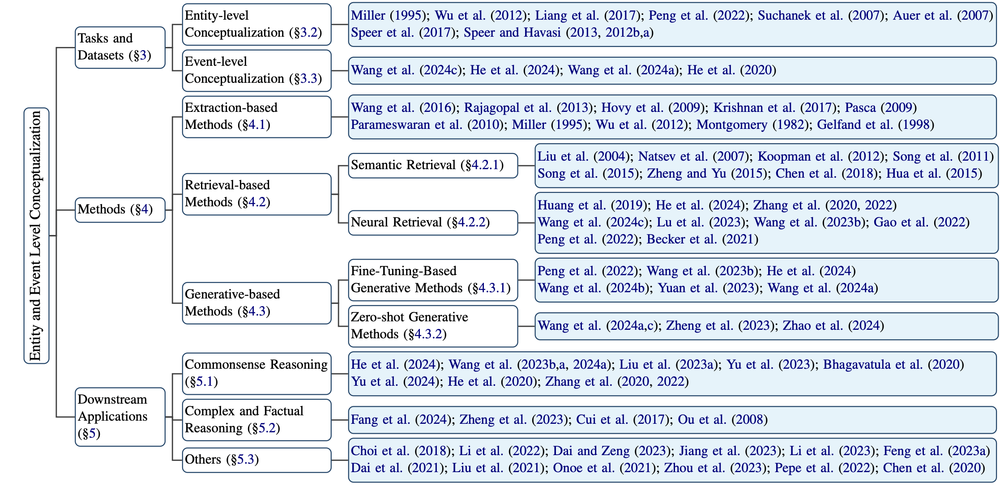
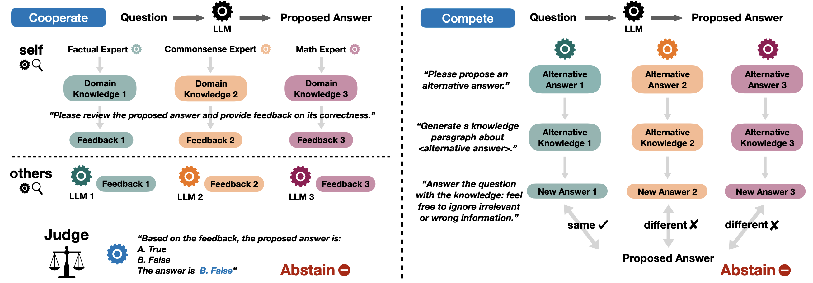
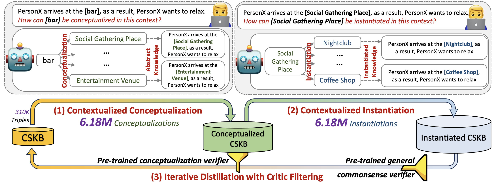

|
Wenxuan Ding Hi, y'all! I am a first year Ph.D. student at TAUR Lab @UT Austin, working with Professor Greg Durrett. Previously, I received my Bachelor's degree at The Hong Kong University of Science and Technology with a major in CS and a minor in Math, where I worked with Professor Yangqiu Song. I also worked with Professor Yulia Tsvetkov at University of Washington.
Email / CV / Google Scholar / Twitter / Github |

|
ResearchI do research in in Natural Language Processing, specifically interested in topics on:
|
Publications
Yellow background indicates lead/co-lead. |
|
|  |
Jihan Yao*, Wenxuan Ding*, Shangbin Feng*, Lucy Lu Wang, Yulia Tsvetkov arXiv, 2024. code |
|  |
Shangbin Feng, Weijia Shi, Yike Wang, Wenxuan Ding, Orevaoghene Ahia, Shuyue Stella Li, Vidhisha Balachandran, Sunayana Sitaram, Yulia Tsvetkov EMNLP, 2024. code |
|  |
Baixuan Xu*, Weiqi Wang*, Haochen Shi, Wenxuan Ding, Huihao Jing, Tianqing Fang, Jiaxin Bai, Xin Liu, Changlong Yu, Zheng Li, Chen Luo, Qingyu Yin, Bing Yin, Long Chen, Yangqiu Song EMNLP, 2024. code |
|  |
Wenxuan Ding*, Weiqi Wang*, Sze Heng Douglas Kwok, Minghao Liu, Tianqing Fang, Jiaxin Bai, Xin Liu, Changlong Yu, Zheng Li, Chen Luo, Qingyu Yin, Bing Yin, Junxian He, Yangqiu Song Findings of EMNLP, 2024. code |
|  |
Weiqi Wang, Tianqing Fang, Haochen Shi, Baixuan Xu, Wenxuan Ding*, Liyu Zhang, Wei Fan, Jiaxin Bai, Haoran Li, Xin Liu, Yangqiu Song arXiv, 2024. |
|  |
Shangbin Feng, Weijia Shi, Yike Wang, Wenxuan Ding, Vidhisha Balachandran, Yulia Tsvetkov ACL, 2024. Area Chair Award; Outstanding Paper Award code |
|  |
Weiqi Wang, Tianqing Fang, Chunyang Li, Haochen Shi, Wenxuan Ding, Baixuan Xu, Zhaowei Wang, Jiaxin Bai, Xin Liu, Jiayang Cheng, Chunkit Chan, Yangqiu Song ACL, 2024. code |

|
Wenxuan Ding*, Shangbin Feng*, Yuhan Liu, Zhaoxuan Tan, Vidhisha Balachandran, Tianxing He, Yulia Tsvetkov Findings of ACL, 2024. code |

|
Weiqi Wang, Tianqing Fang, Wenxuan Ding, Baixuan Xu, Xin Liu, Yangqiu Song, Antoine Bosselut Fingdings of EMNLP, 2023. code |

|
Haochen Shi, Weiqi Wang, Tianqing Fang, Baixuan Xu, Wenxuan Ding, Xin Liu, Yangqiu Song Fingdings of EMNLP, 2023. code |
Teaching
|
Misc
|
|
Website template by Jon Barron. |